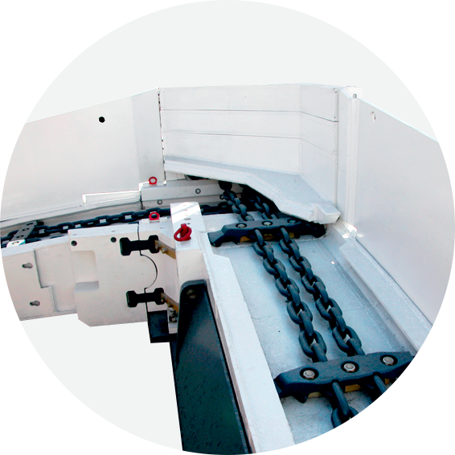
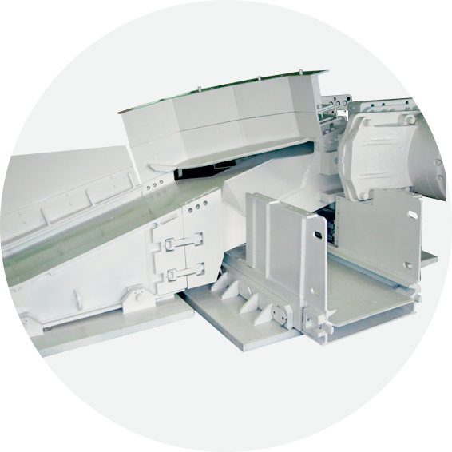
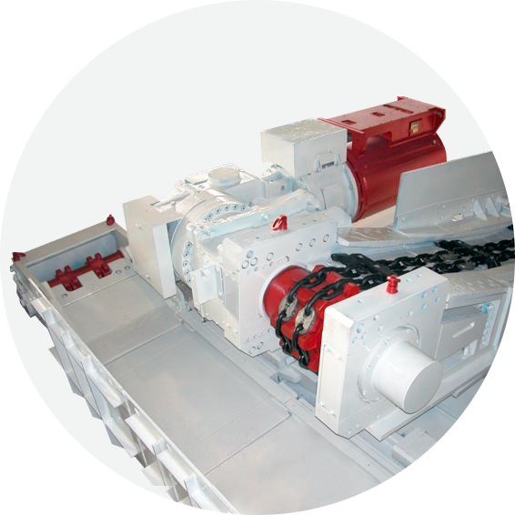
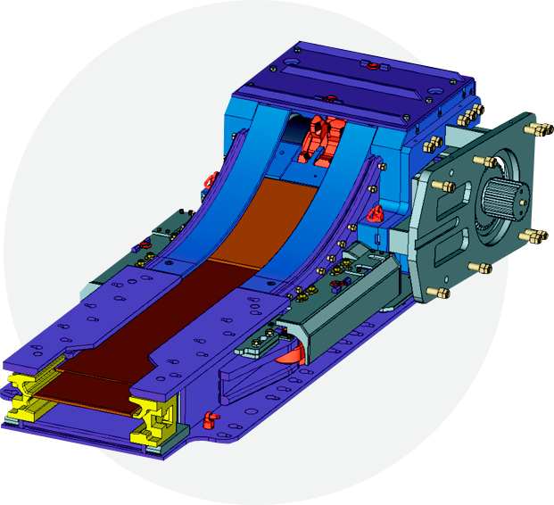
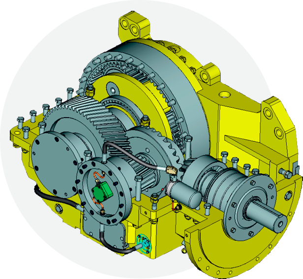

Конвейеры
-

Привод крестовой разгрузки
Конструктивно представляет собой разгрузочный привод забойного конвейера и концевой барабан перегружателя, совмещенные в одной раме. При этом рабочая ветвь скребковой цепи перегружателя движется между рабочей и холостой ветвью забойного конвейера, что обеспечивает незначительную высоту падения перегружаемой горной массы.
Привод крестовой разгрузки используется при отработке лав с углом падения до 25° при условии выполаживания разгрузочного привода.Основные достоинства
- минимизирована высота привода в штреке (в сравнении с приводами прямой и боковой разгрузки)
- фиксированный перегруз горной массы
- исключение заштыбовки холостой ветви конвейера
- минимизация потерь горной массы при перегрузке
- одновременная передвижка привода забойного конвейера и перегружателя штрековыми секциями крепи
- исключено попадание негабаритных кусков горной массы на звездочку привода
- минимизировано измельчение угля при перегрузке
-

Привод боковой разгрузки
- возможность применения при отработке лав с любыми углами падения вдоль забоя
- конструктивно выполнен раздельно от перегружателя с возможностью фиксации последнего на единой плите с приводом
- возможность работы с технологической подрывкой
-

Привод прямой разгрузки с фиксированным пересыпом
Конструктивно представляет собой разгрузочный привод забойного конвейера и концевой барабан перегружателя, совмещенные в одной раме. При этом рабочая ветвь скребковой цепи перегружателя движется между рабочей и холостой ветвью забойного конвейера, что обеспечивает незначительную высоту падения перегружаемой горной массы.
Имеется возможность фиксации перегружателя с приводом на единой плите и, соответственно, совместная передвижка штрековыми секциями.Основные достоинства
- минимизация заштыбовки холостой ветви
- уменьшение потерь горной массы при перегрузке
-

Обратный телескопический привод
Обратный телескопический привод предназначен для обеспечения необходимого предварительного натяжения тягового органа конвейера, компенсации удлинения цепей тягового органа
- Телескопичность до 500 мм.
-

Редукторы
На забойные конвейеры изготавливаются редукторы двух типов и трех исполнений в зависимости от необходимой мощности и условий эксплуатаций:
-
Редукторы типа РПК
3-х ступенчатые: 1 ступень коническая, 2-я цилиндрическая, 3-я планетарная
-
РПК-80
Проведена модернизация редуктора РПК-80 в части повышения надежности, увеличения ресурса и улучшения смазки (введение принудительной смазки подшипников с фильтрацией) с сохранением передаточных чисел, габаритных и присоединительных размеров
-
Редукторы типа РПП
2-х ступенчатые: обе ступени планетарные
Указанные редукторы изготавливаются на современном оборудовании применением зубошлифования всех передач, в том числе конических и с внутренним зубом, и химикотермической обработкой на автоматизированной линии с контролем углеродного потенциала. При производстве используются современные высоколегированные марки стали, подшипники и уплотнения ведущих мировых фирм. Ниже представлены основные характеристики и типы редукторов.
-
Технические характеристики
| Наименование | РПК-45 | РПП-45 | РПК-80 | РПП-80М | РПП-80 | РПК-120 | РПП-120 | РПК-160 | РПП-160 |
|---|---|---|---|---|---|---|---|---|---|
| Передаваемая мощность, кВт | 132-250 | 250-400 | 400-630 | 630-800 | |||||
| Передаточные числа |
|
|
|
|
|||||
| Ресурс, часов | 15 000 | 30 000 | 30 000 | 40 000 | |||||
| Масса редукторов, кг | 1 720 | 2 015 | 3 000 | 2 760 | 3 100 | 4 890 | 3 450 | 6 300 | 4 400 |
| Длина, мм | 1 320 | 994 | 1 451 | 1 330 | 1 072 | 1 595 | 1 020 | 1 680 | 1 120 |
| Ширина, мм | 826 | 744 | 965 | 930 | 936 | 1 044 | 895 | 1 215 | 980 |
| Высота, мм | 736 | 744 | 810 | 800 | 936 | 895 | 895 | 980 | 980 |